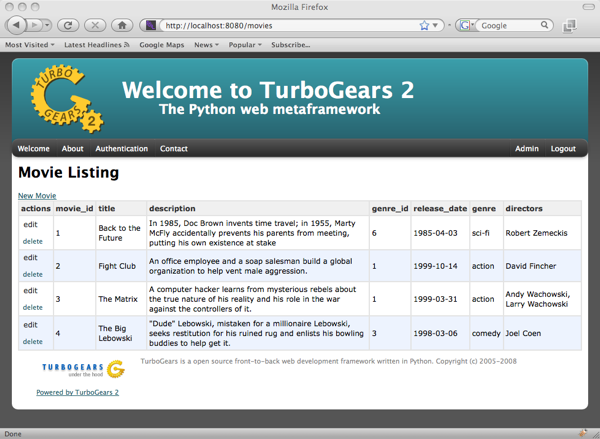

Table Tutorial¶
Here you can find out how to create tables with sprox, including infinitely scrolling tables provided by Dojo. Many of these examples will provide server code based on TurboGears2, but sprox will work with any wsgi application you have ToscaWidgets mounted in. We will assume the reader is somewhat versed in TurboGears2’s tg.controllers.RestController.
Establishing the Model Definition¶
Let us first assume the following model for this demonstration.:
from sqlalchemy import Column, Integer, String, Date, Text, ForeignKey, Table
from sqlalchemy.orm import relation
from moviedemo.model import DeclarativeBase, metadata
movie_directors_table = Table('movie_directors', metadata,
Column('movie_id', Integer, ForeignKey('movies.movie_id'), primary_key = True),
Column('director_id', Integer, ForeignKey('directors.director_id'), primary_key = True))
class Genre(DeclarativeBase):
__tablename__ = "genres"
genre_id = Column(Integer, primary_key=True)
name = Column(String(100))
class Movie(DeclarativeBase):
__tablename__ = "movies"
movie_id = Column(Integer, primary_key=True)
title = Column(String(100), nullable=False)
description = Column(Text, nullable=True)
genre_id = Column(Integer, ForeignKey('genres.genre_id'))
genre = relation('Genre', backref='movies')
release_date = Column(Date, nullable=True)
class Director(DeclarativeBase):
__tablename__ = "directors"
movie_id = Column(Integer, primary_key=True)
title = Column(String(100), nullable=False)
movies = relation(Movie, secondary_join=movie_directors_table, backref="directors")
Basic Table Definition¶
Here, we create a sprox.tablebase.TableBase for the movie.:
from tg.controllers import RestController, redirect
from moviedemo.model import DBSession, Movie, Genre, Director
from sprox.tablebase import TableBase
class MovieTable(TableBase):
__model__ = Movie
movie_table = MovieTable(DBSession);
class SproxMovieController(RestController):
@expose('moviedemo.templates.sproxdemo.movies.get_all')
def get_all(self):
tmpl_context.widget = movie_table
return dict()
And some template code:
<html xmlns="http://www.w3.org/1999/xhtml"
xmlns:py="http://genshi.edgewall.org/"
xmlns:xi="http://www.w3.org/2001/XInclude">
<xi:include href="master.html" />
<head/>
<body>
<div style="height:0px;"> </div>
<div>
<div style="float:left width: 80%">
<h1 style="margin-top:1px;">Movie Listing</h1>
<a href='new/'>New Movie</a>
${tmpl_context.widget()}
</div>
</div>
</body>
</html>
Which produces something like this:

Displaying Actual Data¶
Now, we have a form, but there are no entries for that form. Lets add a sprox.fillerbase.TableFiller to provide data for the form.:
from sprox.fillerbase import TableFiller
class MovieTableFiller(TableFiller):
__model__ = Movie
movie_filler = MovieTableFiller(DBSession)
Then we add that to our controller method:
@expose('moviedemo.templates.sproxdemo.movies.get_all')
def get_all(self):
tmpl_context.widget = movie_table
value = movie_filler.get_value()
return dict(value=value)
Our template’s call of the widget changes like this:
${tmpl_context.widget(value=value)}
Resulting in the data being shown.
You may have noticed that the genre, and directors fields are already populated. Sprox pulls data from the relations you set up in your model definition, and displays them according to a default set of fieldnames as provided by the sprox.viewbase.ViewBase. This may be altered by providing an additional __possible_field_names__ modifier.
Removing unwanted fields¶
This table is not really pleasing to an end-user because of the movie_id and genre_id fields so let’s omit them. Our table definition becomes:
class MovieTable(TableBase):
__model__ = Movie
__omit_fields__ = ['movie_id', 'genre_id']
which looks like this:

You can modify the filler to omit this data also, but it is not necessary. The view will only view the fields specified by your TableBase class. sprox.tablebase.TableBase provides a number of modifiers that allow you to define how the table is displayed.
Removing the actions field¶
Often times, you will want to omit the “actions” field from the table. It may be that you simply want to display the data, with no other allowable actions to perform. We can modify our table to do just that:
class MovieTable(TableBase):
__model__ = Movie
__omit_fields__ = ['movie_id', 'genre_id', '__actions__']
Custom field data display¶
Sometimes it makes sense to provide your own data. What would happen if we wanted to display the Director’s names as links to another page that lists the movies which they directed? Let’s see how that would look:
class MovieTableFiller(TableFiller):
__model__ = Movie
def directors(self, obj):
directors = ', '.join(['<a href="/directors/'+str(d.director_id)+'">'+d.name+'</a>'
for d in obj.directors])
return directors.join(('<div>', '</div>'))
class MovieTable(TableBase):
__model__ = Movie
__omit_fields__ = ['movie_id', 'genre_id', '__actions__']
__xml_fields__ = ['directors']
And now you can see the resulting directors are listed as hrefs:

There are two new features from 0.6 in this example. The first is that you may specify any function in your filler, and if that function matches the name of a field in the Fillers __entity__ it will use that function to produce a string output for filling of that row of data. The function takes a reference to the parent object, so if you are overriding a relation (as we are in this example) you have full access to the object’s scope.
The second new feature is the modifier __xml_fields__ which tells the simple table rendering ToscaWidget not to escape the html tags. This allows the links to “work” in our example.
Adding a new Field¶
Sometimes you want to augment the field entries with one of your own. Let’s add a “similar movies” column that displays movies of the same genre. First, we must modify the table view to include our new column.:
class MovieTable(TableBase):
__model__ = Movie
__omit_fields__ = ['movie_id', 'genre_id', '__actions__']
__xml_fields__ = ['directors']
__add_fields__ = {'related_movies':None}
movie_table = MovieTable(DBSession);
We also need to modify the filler to include the new column, and define a function for it’s display.:
class MovieTableFiller(TableFiller):
__model__ = Movie
__add_fields__ = {'related_movies':None}
def directors(self, obj):
directors = ', '.join(['<a href="/directors/'+str(d.director_id)+'">'+d.name+'</a>'
for d in obj.directors])
return directors.join(('<div>', '</div>'))
def related_movies(self, obj):
return ', '.join([movie.title for movie in obj.genre.movies if movie!=obj])
movie_filler = MovieTableFiller(DBSession)
The resultant table should look something like this:

Changing the TableFiller’s query¶
It is likely at some point that you will want to override sprox’s table querying mechanism. Maybe you want to provide pagination or limit the results to a specific subset of records. Let’s add a new Controller for the directors that print’s their name and displays the movies they directed. Here’s the new controller code:
class SproxDirectorController(RestController):
@expose('moviedemo.templates.sproxdemo.directors.get_one')
def get_one(self, director_id):
tmpl_context.widget = director_movie_table
director = DBSession.query(Director).get(director_id)
value = director_movie_filler.get_value(director=director)
return dict(director=director, value=value)
Our director template could look something like this:
<html xmlns="http://www.w3.org/1999/xhtml"
xmlns:py="http://genshi.edgewall.org/"
xmlns:xi="http://www.w3.org/2001/XInclude">
<xi:include href="master.html" />
<head/>
<body>
<div style="height:0px;"> </div>
<div>
<div style="float:left width: 80%">
<h1>${director.name}</h1>
<h2 style="margin-top:1px;">Movies Directed</h2>
${tmpl_context.widget(value=value)}
</div>
</div>
</body>
</html>
And our director-specific TableFiller:
class DirectorMovieTableFiller(TableFiller):
__model__ = Movie
__add_fields__ = {'related_movies':None}
def directors(self, obj, **kw):
director = kw['director']
directors = ', '.join(['<a href="/directors/'+str(d.director_id)+'">'+d.name+'</a>'
for d in obj.directors if d!=director])
return directors.join(('<div>', '</div>'))
def related_movies(self, obj):
return ', '.join([movie.title for movie in obj.genre.movies if movie!=obj])
def _do_get_provider_count_and_objs(self, director=None, **kw):
movies = DBSession.query(Movie).filter(Movie.directors.contains(director)).all()
return len(movies), movies
director_movie_filler = DirectorMovieTableFiller(DBSession)
The first difference you may notice is that we have added a _do_get_provider_count_and_objs method. This method defines how the query should be performed for the given filler. In this case, we are filtering only on Movies which have the indicated director. The director value comes in from your get_value call inside the controller. The function returns both a length and a list of objects. The length is the length of all objects that may be queried, the list of objects is just those the user wants for the given context. This is particularly useful when designing paginated tables.
You may also notice that we have changed the directors method to include the director in the call. Sprox will also pass variables in from the get_value call to your field methods if you specify parameters for those variables in your method call.
Our TableBase code is largely unchanged.:
class DirectorMovieTable(TableBase):
__model__ = Movie
__omit_fields__ = ['movie_id', 'genre_id', '__actions__']
__xml_fields__ = ['directors']
__add_fields__ = {'related_movies':None}
director_movie_table = DirectorMovieTable(DBSession);
And the resulting page.

Changing the Column Header Names¶
While the column names are functional, they aren’t pretty, and in the case of the director page, it really should say “other directors”. Let’s use the __headers__ modifier and change that.:
class DirectorMovieTable(TableBase):
__model__ = Movie
__omit_fields__ = ['movie_id', 'genre_id', '__actions__']
__xml_fields__ = ['other directors']
__add_fields__ = {'related_movies':None}
__headers__ = {'directors': 'other directors'}
And the compulsory screenshot:

Adding Dojo to the mix¶
Dojo is a JavaScript library that sprox uses to create tables that are infinitely scrolling. This is especially handy if you don’t want to go through the trouble of writing pagination code. The first thing we need to do is install tw.dojo, which is a toscawidget wrapper for the library:
easy_install tw.dojo
Next we modify our Table code to utilize the sprox dojo filler and table classes:
from sprox.dojo.tablebase import DojoTableBase as TableBase
from sprox.dojo.fillerbase import DojoTableFiller as TableFiller
class MovieTableFiller(TableFiller):
__model__ = Movie
__add_fields__ = {'related_movies':None}
def directors(self, obj):
directors = ', '.join(['<a href="/directors/'+str(d.director_id)+'">'+d.name+'</a>'
for d in obj.directors])
return directors.join(('<div>', '</div>'))
def related_movies(self, obj):
return ', '.join([movie.title for movie in obj.genre.movies if movie!=obj])
movie_filler = MovieTableFiller(DBSession)
class MovieTable(TableBase):
__model__ = Movie
__omit_fields__ = ['movie_id', 'genre_id', '__actions__']
__xml_fields__ = ['directors']
__add_fields__ = {'related_movies':None}
__url__ = "/movies.json"
movie_table = MovieTable(DBSession)
Now if you take a look at our movie page you will see that there is a table, but no data:
This is because dojo has a different method of obtaining the table data. It performs an Ajax call back to the server to retrieve a stream of data. We need to change our controller method to publish this stream:
class SproxDirectorController(RestController):
@expose('moviedemo.templates.sproxdemo.directors.get_one')
def get_one(self, director_id):
tmpl_context.widget = director_movie_table
director = DBSession.query(Director).get(director_id)
value = director_movie_filler.get_value(director=director)
return dict(director=director, value=value)
Once we fix this we get our data back:

Changing column widths¶
Sprox sets all column widths to 10em by default. This will probably need to be modified in order for your data to look right. Here is how we do that:
class MovieTable(TableBase):
__model__ = Movie
__omit_fields__ = ['movie_id', 'genre_id', '__actions__']
__xml_fields__ = ['directors']
__add_fields__ = {'related_movies':None}
__column_widths__ = {'description':"30em",
'release_date':"7em",
'genre':"4em",
}
__url__ = "/movies.json"
And here is how it looks after modification:

To Summarize¶
TableBase and TableFiller provide an easy path for display of data to a webpage. They can be heavily customized, especially with the advent of field_methods in 0.6, which allow you to provide a python function for field data display. tw.dojo gives TableFiller and TableBase with the capability to have an ajaxy interface with infinite scrolling. If you’d like to review the code used to create this tutorial, please:
svn co http://pythontutorials.googlecode.com/svn/tutorials/moviedemo/trunk moviedemo